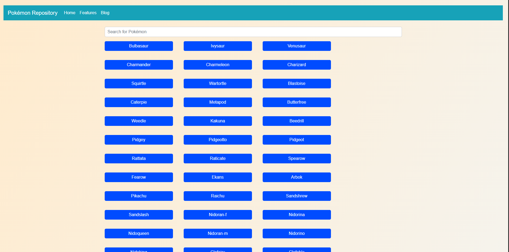
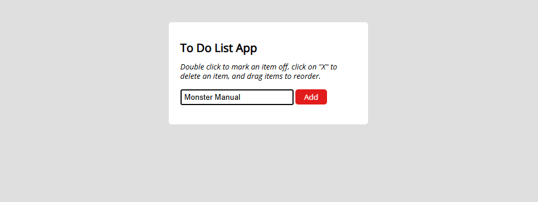
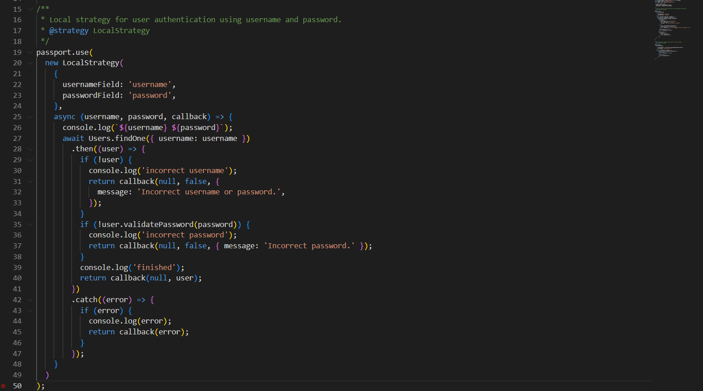
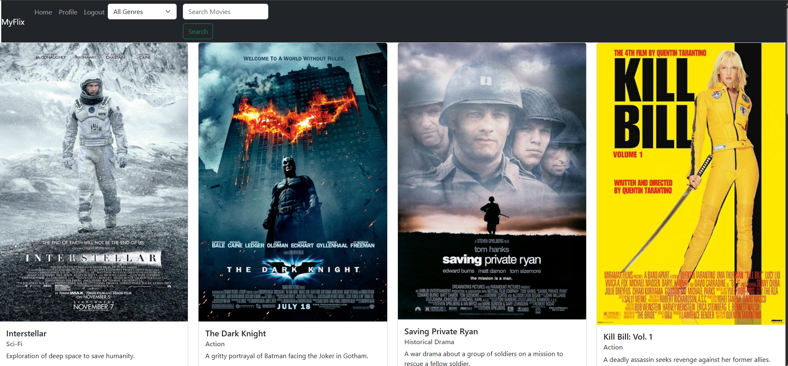
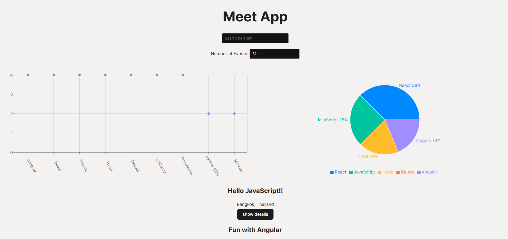
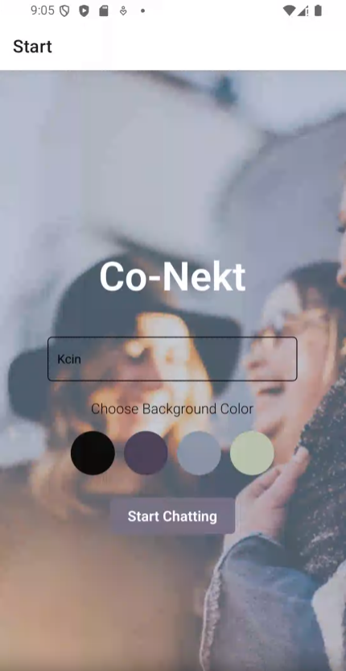
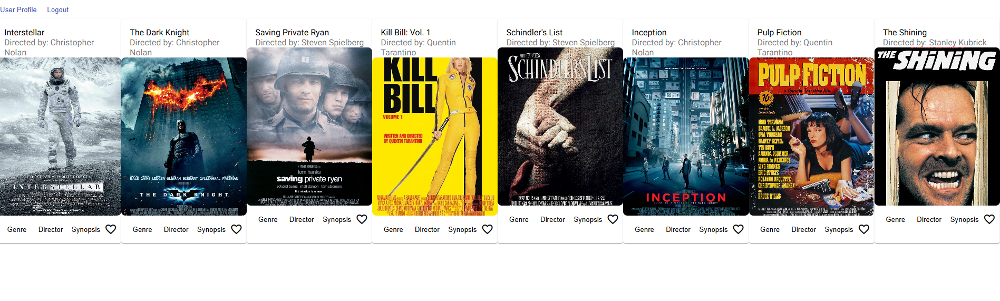

The Pokémon Repository is a web application that allows users to browse a list of Pokémons and view their details. It serves as a practical project for learning JavaScript, API interactions, and responsive design using Bootstrap.

A simple app to manage tasks. Add, complete, delete, and reorder tasks easily.

This is a RESTful API that provides users with the ability to interact with movie data, including movies, genres, directors, and user-specific actions such as registration, favorites, and more.

A movie discovery app built with React, Bootstrap, and Node.js that allows users to view movie details, manage their profile, and add movies to their list of favorites.

Meet App is a progressive web application (PWA) designed to help users find, view, and manage upcoming events in various cities. With features like offline access, customizable views, and detailed event information, Meet App offers a user-friendly way to stay informed about events.

Co-Nekt is a React Native chat application built using Expo and Firebase. The app allows users to chat in real-time, share images, and send their location. It supports offline functionality by caching messages locally and reconnecting to Firebase when the network is restored.

myFlix is a movie discovery app built using Angular. It allows users to browse movies, view details about directors and genres, and manage their favorite movies.